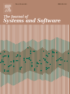

1st International Workshop on
November 21, 2014 in Hong Kong
There is little research on defining what context is, how we can model it, and how we can use those models in software development at large. This workshop aims at identifying and modeling context in software development, as well as discussing its application. Papers may address issues along the broad topics, including but not limited to the following:
We invite two kinds of submissions: 5-page long papers and 2-page short papers. A selection of papers will be presented at the workshop.
At the time of submission all papers must conform to the FSE 2014 Format and Submission Guidelines. All submissions must be in English and in PDF format. Submissions that do not comply with the above instructions will be desk rejected without review.
Each submission will be reviewed by at least two members of the Program Committee. Submissions will be evaluated on the basis of originality, importance of contribution, soundness, evaluation, quality of presentation and appropriate comparison to related work. The program committee as a whole will make final decisions about which submissions to accept for presentation at the workshop.

Submissions will be accepted electronically through EasyChair .
Papers are intended as positions for discussion and not for archival publication, so they will not appear in the ACM Digital Library. Extended versions of the best papers will be invited for publication in a special issue of Journal of Systems and Software.
| Call for papers | May 9, 2014 |
| Paper submissions due | |
| Notifications | August 15, 2014 |
| Camera Ready deadline | August 29, 2014 |
| Workshop | November 21, 2014 |